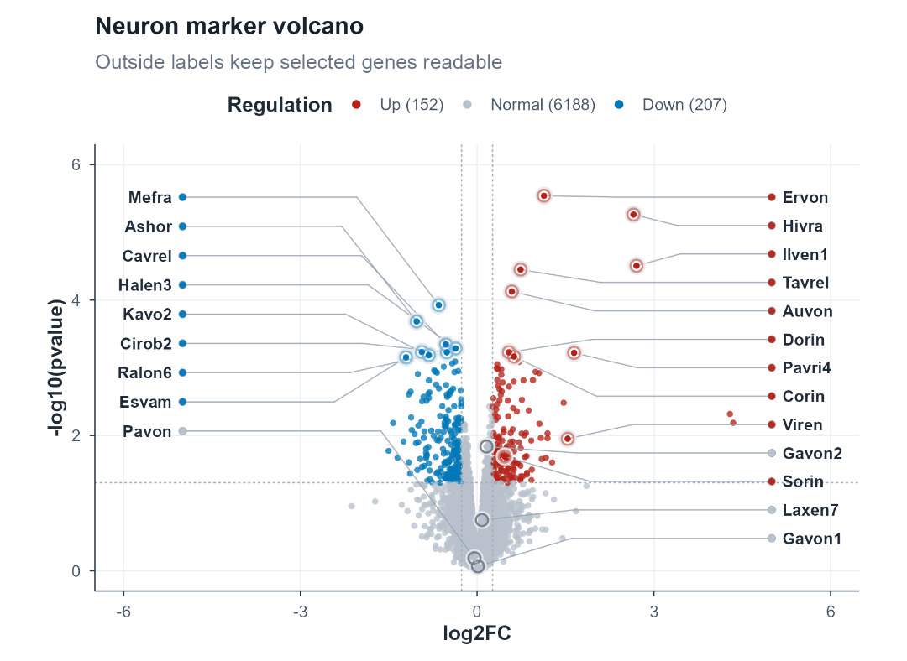
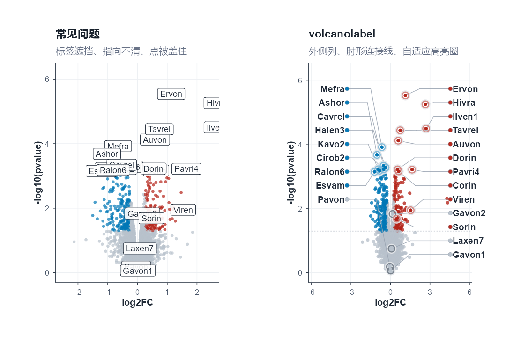
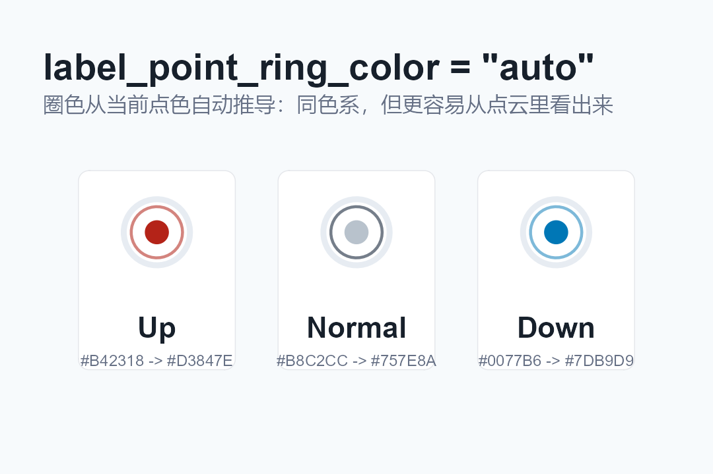
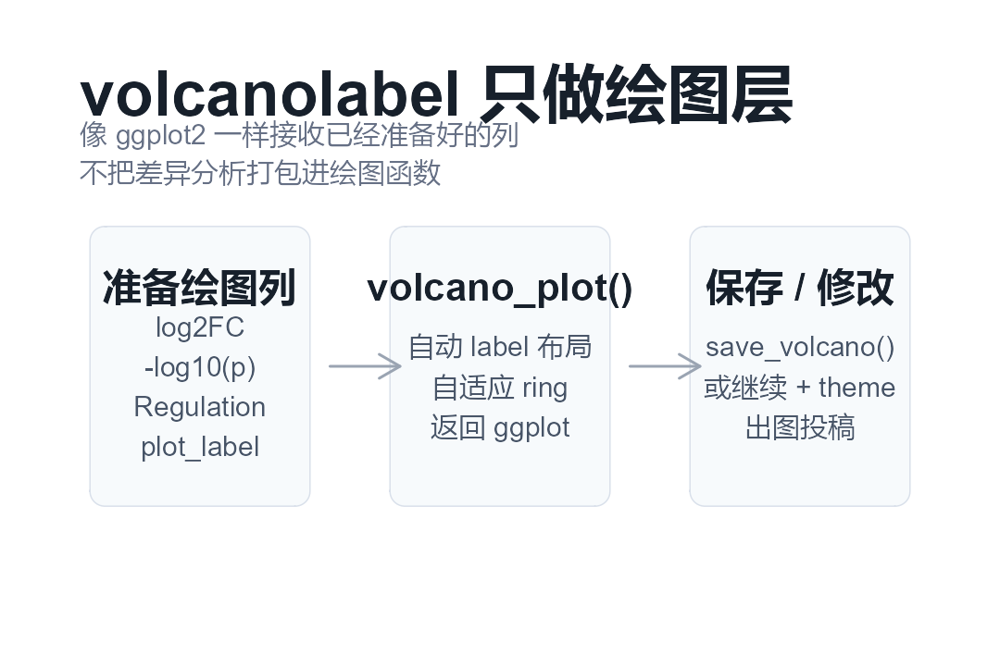

volcanolabel：把火山图标签稳稳放好
一个专注于火山图绘图层的 R 包：不替你做差异分析，只把已经准备好的 log2FC、p 值、分组和标签画得清楚、克制、可发表。
外侧标签列
肘形连接线
自适应 ring color
无白底标签
返回 ggplot

示例数据中的基因名已匿名化；图中颜色与高亮圈来自自定义 palette 和 auto ring 规则。
为什么要写这个包
火山图本身并不难画，真正麻烦的是“被指出来的细节”：标签挤在一起、label 指向不清、y 轴附近的标签压线、白底标签盖住点、被圈出来的点在密集区域里看不见，或者换了一套配色以后高亮圈又失效。
这个包的出发点很朴素：同事总会认真地指出这些问题，而这些问题如果每次都靠手工调图，既慢，也不稳定。所以 volcanolabel 把这类火山图展示问题沉到绘图函数里，让标签、连接线、颜色和高亮点有一套可复用的默认规则。

安装
install.packages("remotes", repos = "https://cloud.r-project.org")
remotes::install_github("XiaoLi1991-star/volcanolabel")数据准备
volcanolabel 像 ggplot2 一样偏绘图层。它不读取差异分析文件，不计算 p 值，不判断哪些基因该上调或下调，也不替你决定哪些基因重要。你只需要准备好这些列：
| 列 | 含义 | 示例 |
|---|---|---|
x | x 轴坐标 | log2FC |
y | y 轴坐标 | -log10(pvalue) |
color | 点的分组 | Up, Normal, Down |
label | 需要显示的标签 | 不显示的行填 NA 或空字符串 |
library(volcanolabel)
expr <- read.table(
system.file("extdata", "gene_expression.txt", package = "volcanolabel"),
header = TRUE,
sep = "\t",
stringsAsFactors = FALSE,
check.names = FALSE
)
x_cutoff <- log2(1.2)
y_cutoff <- -log10(0.05)
genes_to_label <- c(
"Mefra", "Ashor", "Cavrel", "Halen3", "Kavo2", "Cirob2", "Ralon6", "Esvam", "Pavon",
"Ervon", "Hivra", "Ilven1", "Tavrel", "Auvon", "Dorin", "Pavri4", "Corin",
"Viren", "Gavon2", "Sorin", "Laxen7", "Gavon1"
)
expr$neg_log10_p <- -log10(pmax(expr$pvalue, .Machine$double.xmin))
expr$Regulation <- ifelse(
expr$log2FC >= x_cutoff & expr$neg_log10_p >= y_cutoff,
"Up",
ifelse(expr$log2FC <= -x_cutoff & expr$neg_log10_p >= y_cutoff, "Down", "Normal")
)
expr$plot_label <- ifelse(expr$gene %in% genes_to_label, expr$gene, NA_character_)基础绘图
custom_palette <- c(
Up = "#B42318",
Normal = "#B8C2CC",
Down = "#0077B6"
)
p <- volcano_plot(
expr,
x = "log2FC",
y = "neg_log10_p",
label = "plot_label",
color = "Regulation",
palette = custom_palette,
x_cutoff = x_cutoff,
y_cutoff = y_cutoff,
label_point_ring_color = "auto",
label_anchor_x_left = -5,
label_anchor_x_right = 5,
plot_xmax = 5.9,
xlab = "log2FC",
ylab = "-log10(pvalue)",
title = "Neuron marker volcano",
subtitle = "Outside labels keep selected genes readable"
)
save_volcano(p, "volcano_plot.png", width = 7.4, height = 5.4)
save_volcano(p, "volcano_plot.pdf", width = 7.4, height = 5.4)ring color 的规则
label_point_ring_color = "auto" 会从当前分组点色推导高亮圈颜色。它不是固定用一种灰色，也不是简单复制点色，而是在同一色系中找一个更容易从点云里分辨出来的颜色。

如果想让高亮圈完全跟随点色，可以用
label_point_ring_color = "group"。如果只想指定一个固定颜色，也可以直接传入十六进制颜色，例如 "#111827"。API 思路

这种设计刻意把差异分析和绘图分开：Seurat、DESeq2、edgeR、limma、Scanpy 或自定义流程都可以先生成表格，然后把绘图列交给 volcano_plot()。
公众号配图清单
| 用途 | 文件 | 尺寸 |
|---|---|---|
| 头图封面 | wechat-cover-v2-900x383.png / .jpg | 900 x 383 |
| 高清头图 | wechat-cover-v2-retina-1800x766.png | 1800 x 766 |
| 分享卡片 | wechat-share-500x400.png / .jpg | 500 x 400 |
| 次条/方形封面 | wechat-square-v2-1080x1080.png / .jpg | 1080 x 1080 |
| 正文配图 | article-*.png | 1080 px 宽或主图原始尺寸 |
项目地址
GitHub: https://github.com/XiaoLi1991-star/volcanolabel
License: MIT